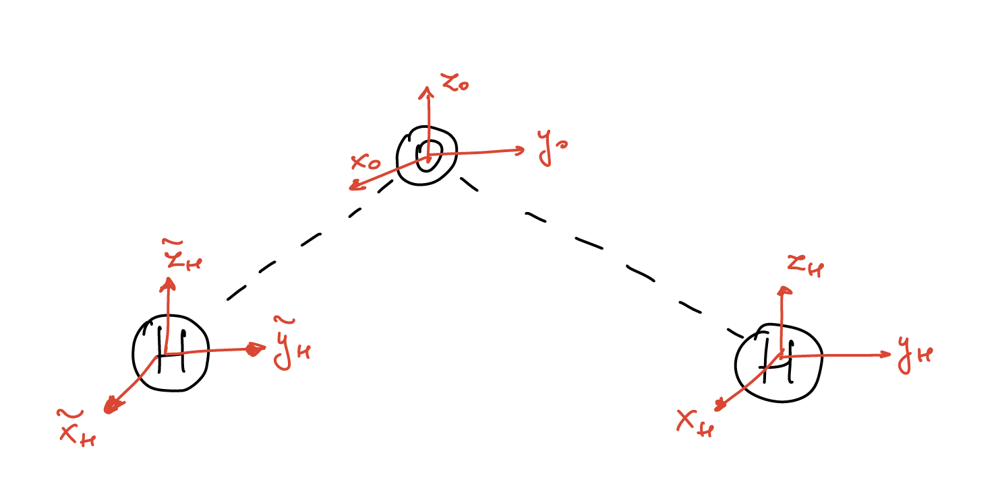
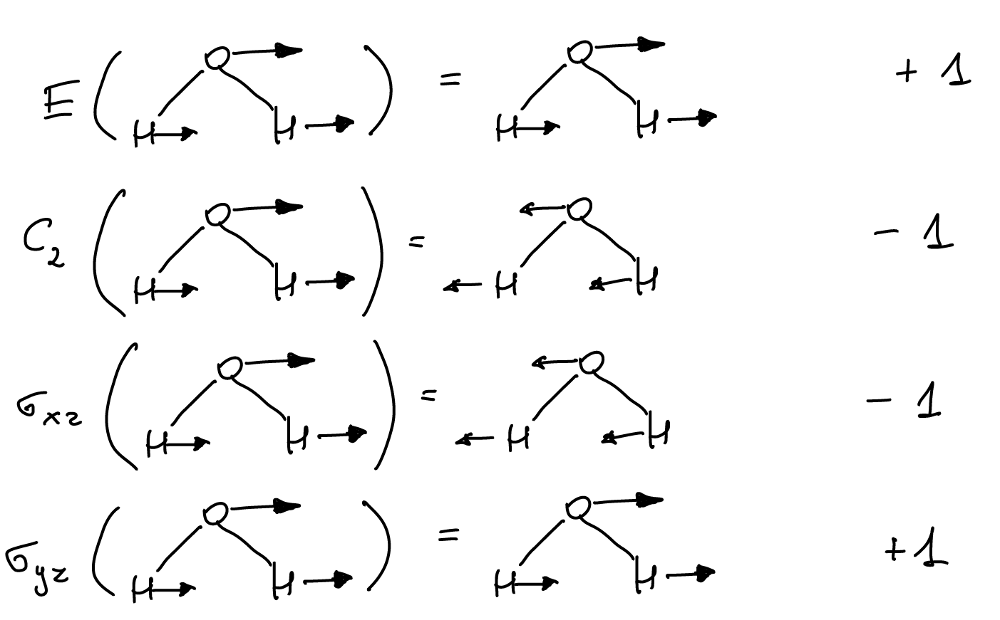
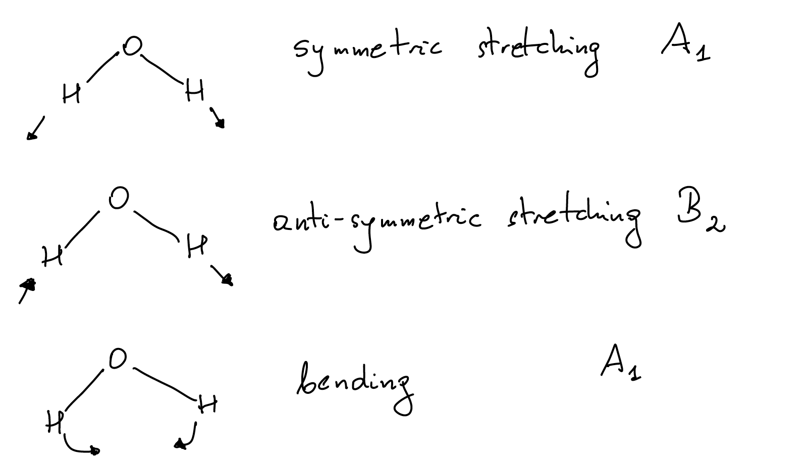

Applications of representation theory to physics problems
Contents
10. Applications of representation theory to physics problems¶
Representation theory can be used in many problems in physics to simplify calculations:
molecular physics
crystallography
quantum mechanics
particle physics
…
any system with a symmetry
10.1. Main example: vibrations of water molecules¶
{kind=link}
This molecule sits in the \(y-z\) plane with the \(x\)-axis pointing towards the reader.
There are four symmetries of this molecule:
\(E\): identity
\(C_2\): rotation by \(\pi\) in the \(x-y\) plane
\(\sigma_{yz}\): reflection with respect to the \(y-z\) plane
\(\sigma_{xz}\): reflection with respect to the \(x=z\) plane located at the oxygen atom
Multiplication table of this group is:
This group of symmetries is called \(C_{2\nu}\) and it is isomorphic to the group \(\mathbb{Z}_2\times \mathbb{Z}_2\):
with the binary operation given by addition of these two-dimensional vectors modulo 2.
In the following we will use the character table for \(C_{2\nu}\). The group \(C_{2\nu}\) is abelian with four elements, each of which gives one conjugacy class, implying that there are four irreducible representations, all of them one-dimensional:
Looking back at the water molecule, we can construct the representation generated by the nine vectors in the figure above: \((x_O,y_O,z_O,x_H,y_H,z_H,\tilde{x}_H,\tilde{y}_H,\tilde{z}_H)\). This provides the following nine dimensional representation \(\Gamma_9\):
We can calculate the characters of this representation
This representation is reducible and can be decomposed into irreducible representations:
Therefore
This decomposition can be understood in the following way:
every particle has 3 translational degrees of freedom. Let us translate the molecule along the \(y\)-axis
{kind=link}
This defines a representation of \(C_{2\nu}\) since
{kind=link}
This is the same action as we found for the irreducible representation \(B_2\).
Similar for the translations \(T_x\) and \(T_z\). This can be summarized in the table below
every particle has three rotational degrees of freedom. Let \(R_z\) be the rotation in the plane perpendicular to the \(z\)-axis
{kind=link}
We can find the action of all symmetries on these vectors to find
To summarize:
translations: \(\Gamma_{\mathrm{trans}}=A_1\oplus B_1\oplus B_2\)
rotations: \(\Gamma_{\mathrm{rot}}=A_2\oplus B_1\oplus B_2\)
Recall that \(\Gamma_9=3A_1\oplus A_2\oplus 2B_1\oplus 3B_2\). Then, after removing the translations and rotations we get:
we are left with three vibrational degrees of freedom. They correspond to:
{kind=link}
Each of these degrees of freedom will lead to a single normal mode with its own very well-defined frequency and energy that can be measured in experiments.